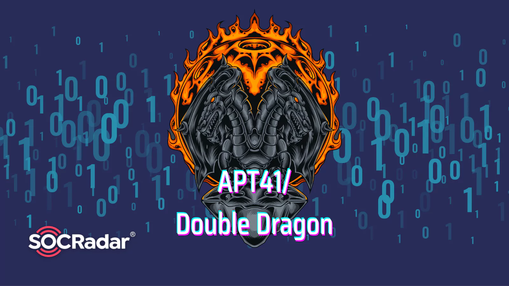

RTL Industrie – E5
Déploiement d’une infrastructure réseau

Projet M@ Banque
Sécurisation d’une banque avec Linux & Windows Server
Projet InfoDev
Gestion de projet avec Trello et méthode Kanban

Projet GSB – Site web statique
Création d’un site vitrine responsive pour le laboratoire GSB

APT 41 – Double Dragon
Etude d'une menace persistante avancée réelle APT41.